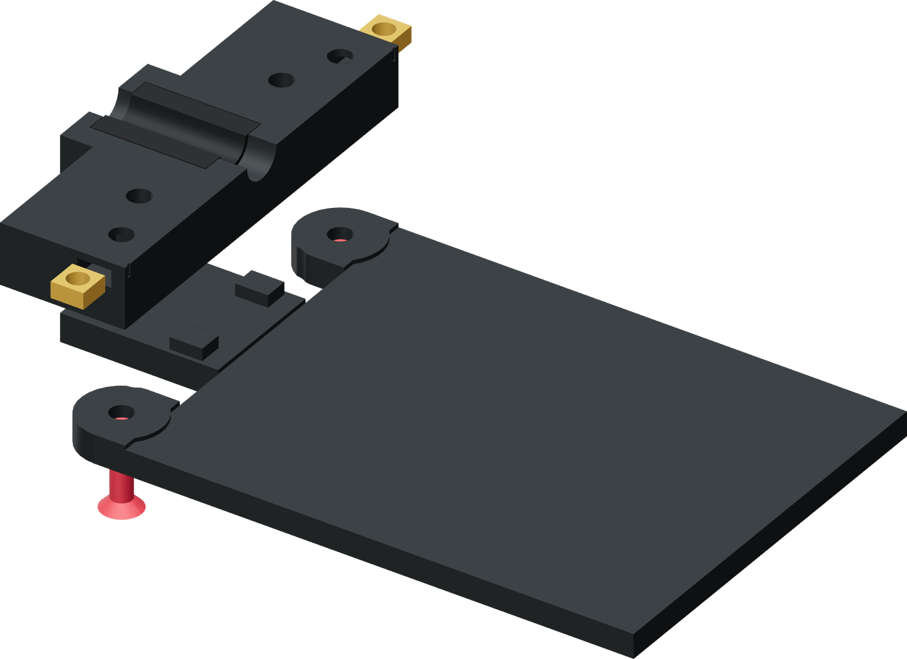

Bolt B to lower jaw D
Two countersunk screws join the carrier to the lower jaw. Side-loaded square nuts secure the joint before the carrier enters its guides.

- Load one M5 square nut into each lower-jaw side pocket, with its threaded hole aligned to the carrier screw axis.
- Align D's underside pockets with the two raised locating keys on B. Keep D seated fully on the carrier support face.
- Pass the two M5 × 20 countersunk screws upward through B and thread them into the square nuts.
- Close the joint evenly. Confirm both countersunk heads seat at or below B's underside and the jaw does not move sideways on the carrier.
Finished when
B and D form one detachable assembly. Both locating features are seated, both nuts are retained and the carrier underside is clear to slide.